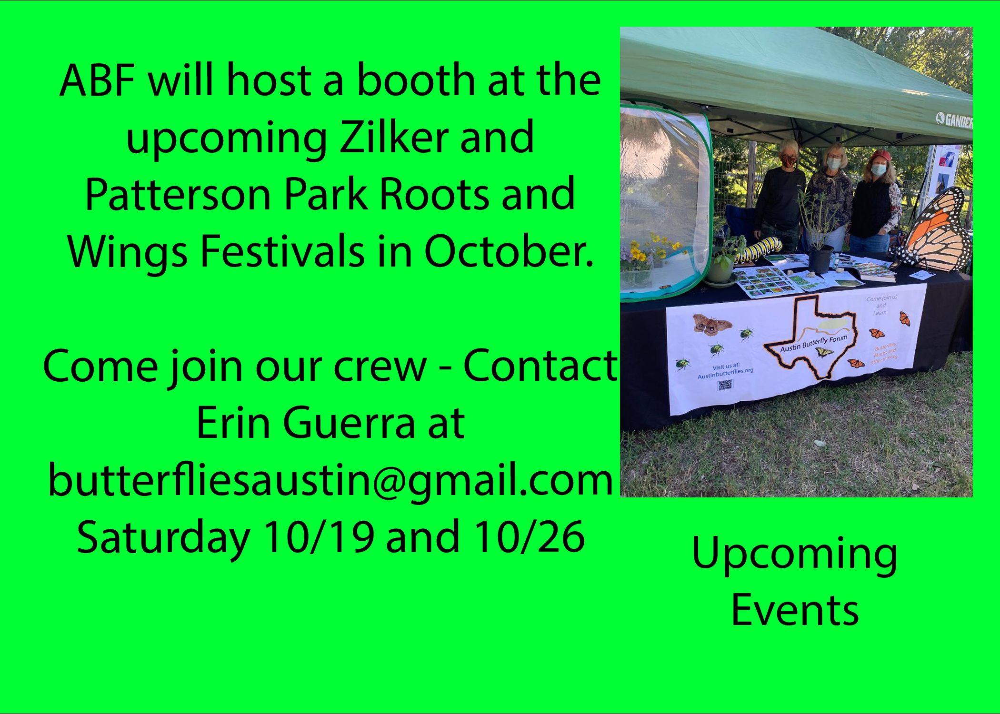
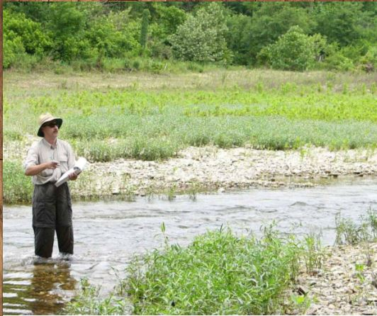
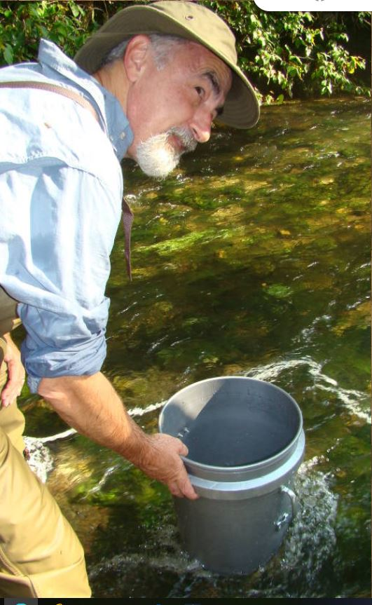
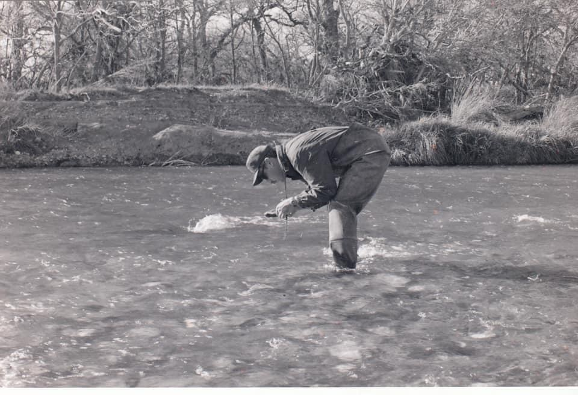
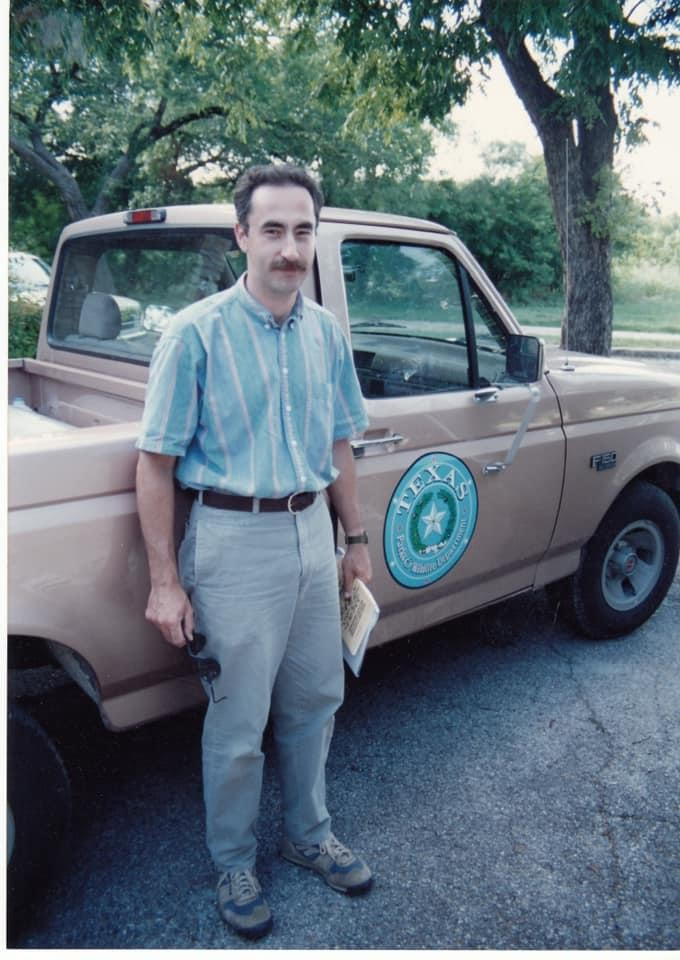
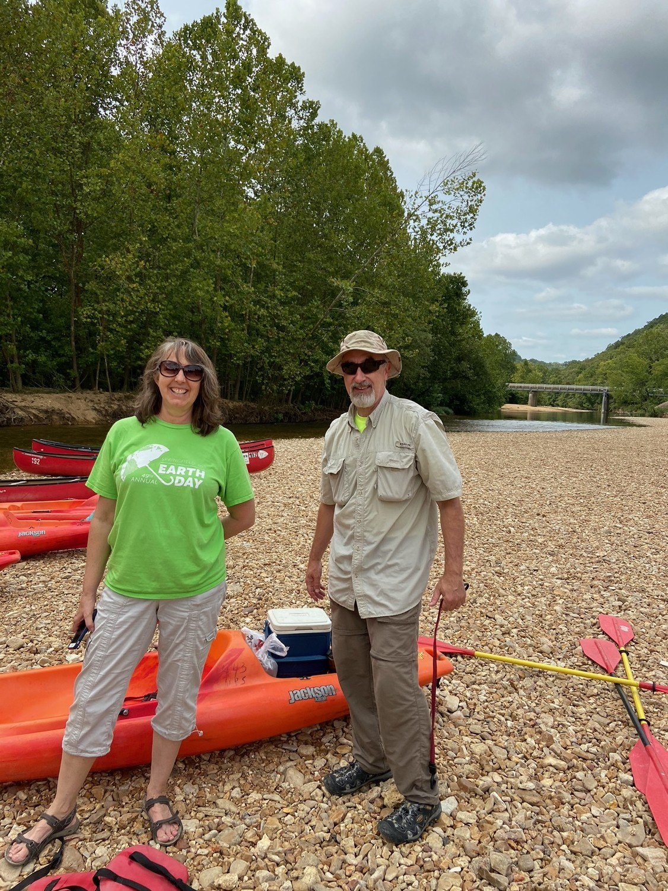

"ABF upcoming Events Above - Next Meeting Below"
Join us on Monday August 26th on Zoom only for Presentation "Dusty Demons to Aquatic Angels: Diversity & Biology of Lacewings Insects."

Presented by Dr. David E. Bowles is a retired aquatic entomologist and ecologist.
Join us on Monday August 26th on Zoom only for Presentation "Dusty Demons to Aquatic Angels: Diversity & Biology of Lacewings Insects. "

Presented by Dr. David E. Bowles is a retired aquatic entomologist and ecologist.
Join us on Monday August 26th on Zoom only for Presentation "Dusty Demons to Aquatic Angels: Diversity & Biology of Lacewings Insects."

Presented by Dr. David E. Bowles is a retired aquatic entomologist and ecologist.
Join us on Monday August 26th on Zoom only for Presentation "Dusty Demons to Aquatic Angels: Diversity & Biology of Lacewings Insects."

Presented by Dr. David E. Bowles is a retired aquatic entomologist and ecologist.
Join us on Monday August 26th on Zoom only for Presentation "Dusty Demons to Aquatic Angels: Diversity & Biology of Lacewings Insects."

Presented by Dr. David E. Bowles is a retired aquatic entomologist and ecologist.
Join us on Monday August 26th on Zoom only for Presentation "Dusty Demons to Aquatic Angels: Diversity & Biology of Lacewings Insects. Presented by Dr. David E. Bowles.
Bio: Dr. David E. Bowles is a retired aquatic entomologist and ecologist. He holds a B.S. in Biology and Natural Resources from Ball State University, a M.S. in Aquatic Biology from Texas State University, and a Ph.D. in Entomology from the University of Arkansas, Fayetteville. He is the former Aquatic Program Leader, Heartland Inventory & Monitoring Network, U.S. National Park Service. As program leader he oversaw long-term monitoring programs addressing water quality, aquatic vegetation, invertebrates, salamanders, fish, and other resources in 15 National Park properties, including Buffalo National River and Ozark National Scenic Riverways. He also worked as a Conservation Biologist for the Texas Parks & Wildlife Department for 12 years. He has served as a member of several endangered species recovery teams, including the Rio Grande Silvery Minnow, Barton Springs Salamander, and the Southern Edwards Aquifer Ecosystem. Dr. Bowles also served as Adjunct Professor of Biology at Texas State University and Missouri State University. Presently, he serves on the Board of Directors as vice-chairman for the Lovett Pinetum, and he also is the volunteer acting Collection Manager for the University of Arkansas Arthropod Museum. Dr. Bowles has published extensively on a variety of subjects, including taxonomy and ecology of aquatic insects and Crustacea, aquatic botany, fisheries biology, and medical entomology. Dr. Bowles is a retired U.S. Air Force Reserve Colonel and he worked in a broad variety of assignments as a medical entomologist and intelligence officer. He is married to Beth Davis Bowles, a phycologist, and has two daughters.
facebook group
join our large group discussion on facebook

Monarch Emergence Video by Linda Avitt